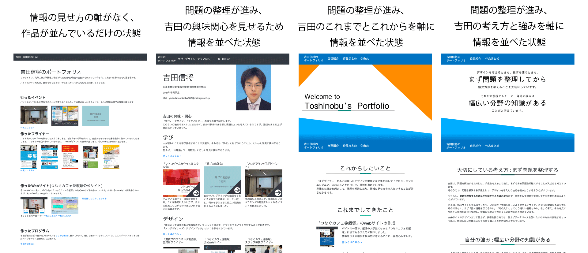

大切にしている考え方 : まず問題を整理する
吉田は、問題を解決するためには、手段を考えるより前に、まず今ある問題を明確にすることが大切だと考えています。
そのうえで、問題を解決する手段として、デザインを考えたり技術を使ったりするよう心がけています。
例えば、Webサイトを作る時でしたら、いきなり「情報をかっこよく見せるデザイン」のような曖昧なものを考えるのではなく、まず「誰に情報を伝えるのか」「その人にとってどう嬉しい情報なのか」をよく考え、それを元に解決する問題を改めて整理し、情報の見せ方を考えることが大切だと考えています。
Webサイトのデザインだけに限らず、技術を使う時でも、例えばデータベースを使いたいのでRailsで実装するという風に、解決したい問題に応じて技術を選ぶことが大切だと考えています。
作業しながら問題を整理する
もちろん、問題を理解するために手を動かすことは必要なので、試作をして問題を整理してから作業を進めるようにしています。
もう少し具体的には、まずは問題を解決できそうな試作をして、自分以外の人に見せ、得られたフィードバックを元に問題を整理し、問題を解決できそうな試作をする…というサイクルを繰り返します。
また、「サイクルのどこかで成果物が完成するのでそこで終わっていい」という訳ではなく、サイクルを回すごとにより良い成果物になるよう改善を繰り返す必要があるとも感じています。
例えば、このポートフォリオサイトは、試作を繰り返すうちにだんだんと問題が整理され、今のデザインになっています。
自分の強み : 幅広い分野の知識がある
上の考えを大前提とした上で、自分の強みは、Webのデザインからバックエンドの実装まで幅広い分野の知識があることだと考えています。
チームでの作業の多くに関わることができます
これまで、「デザインだけ」「技術だけ」を扱うのでなく、幅広い分野に挑戦し積極的に学んできました。
例えば、アルバイト先で業務の一環として、公式Webサイトの作成を行いました。吉田は、Webサイトのデザインを紙に書いて設計するところから、HTML+css+jsと静的サイトジェネレータHUGOでの実装までを任されました。
実装した後、そのサイトをバイト先の自前のサーバーで公開することになったのですが、人手が空いていなかったので、こちらも吉田が自分で作ることになりました。勉強しながら、WebサーバーやDNS、サブドメインを扱うためのリバースプロキシを作っています。
ほぼ全てを吉田が一人で実装しました。が、作業の全体を通して、まめにアルバイト先の人と話をし、制作物の検証・修正を繰り返しました。
複数の分野の知識を生かして、問題の解決策を考えることができます
複数の分野の知識を生かして、それぞれの分野をうまく組み合わせた問題の解決策を考えることもできます。
例えば、アルバイトの一環で、学内で「レトロゲームを作ってみようの会」というイベントを行ったことがあります。技術に触れることを通して、大学での学びについて考えてもらうイベントでした。
人に伝わるように情報の見せ方を考えることを「デザイン」だと定義すると、ゲーム作りなどのプログラミングの技術に興味のある人の多い情報工学部では、参加してもらい自分のこととして考えてもらうために、イベントにこのような技術を用いることは非常に有効なデザインだったと思います。
必要になれば、詳しくない分野も積極的に学び、実践します

今詳しくない分野であっても、それが問題を解決するために必要であれば、積極的に学び、モノを作るようにしています。
例えば、個人で、ゲーム「猫とタピオカ」を作ったことがあります。
制限時間内に、猫とタピオカをたくさん集めるゲームです。最大で1000個ほど集まります。
これを作る際、人とスコアを比較して自分の順位がわかると、何度も遊びたくなるのではと考え、スコアを保存するサーバを作ることにしました。
そこで、周囲に詳しい人が多かったRuby on Railsを勉強し、スコアを保存するためのサーバーを制作しました。